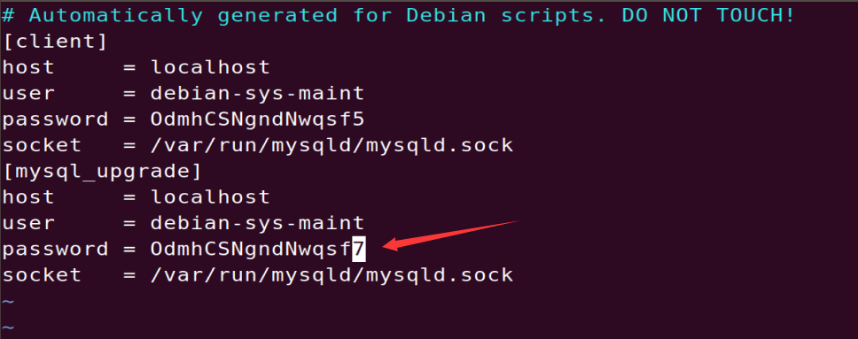
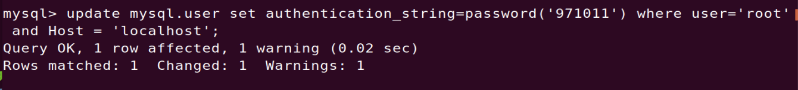
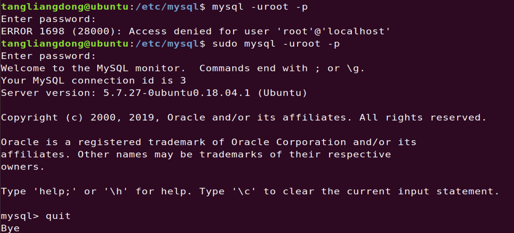
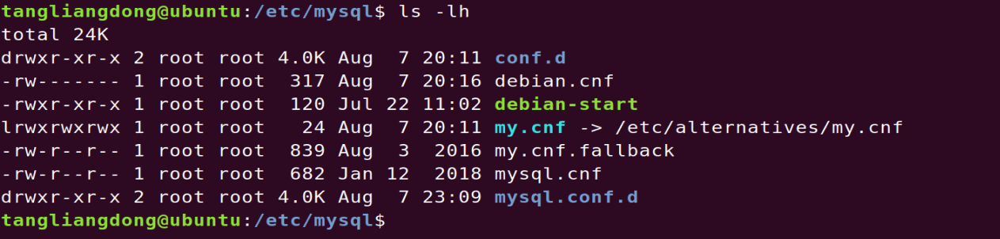
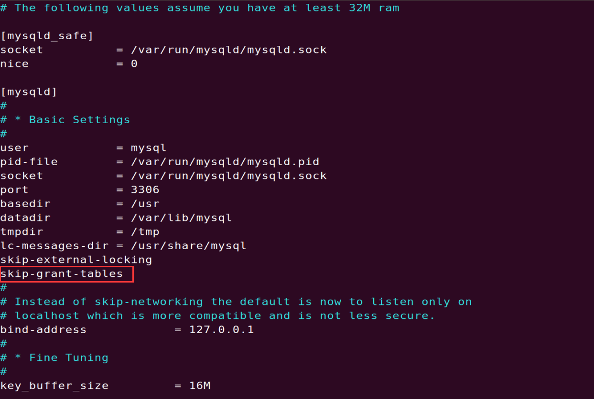

Ubuntu上的数据库修改密码
Ubuntu上的数据库安装好之后没有提示输入密码，自然后来 mysql -uroot -p不知道是什么密码，均是报错
1 | ERROR 1045 (28000): Access denied for user 'root'@'localhost' (using password: YES) |
需要打开一个文件 /etc/mysql/debian.cnf
1 | sudo vim /etc/mysql/debian.cnf |

将终端里登陆用的用户名root换成文件里的 debian-sys-maint 和 password值 进行数据库的登陆操作，
1 | mysql -u debian-sys-maint -p |
这时再输入对应的密码就可以顺利登陆了，然后就要修改root的密码，不然用这个密码可太麻烦了。
系统所使用的是5.7版本的mysql，password字段已经被删除，取而代之的是authentication_string字段，所以要更改密码：
1 | mysql> update mysql.user set authentication_string=password('password') where user='root'and Host = 'localhost'; |
若是出现下图则代表修改成功，之后只需要重启mysql就可以登陆了。

Ubuntu 上的mysql只能sudo登陆

Ubuntu上安装好的mysql 5.7，无法用 mysql -uroot -p 进行登陆，只能通过sudo mysql -uroot -p
解决办法
修改MySQL配置文件，添加一句skip-grant-tables，重启即可无需密码登录
旧版mysql
在Ubuntu，默认安装配置文件全路径 /etc/mysql/my.cnf
新版MySQL
对于5.7.23等高版本，配置文件路径和命令已经改变
此时的 /etc/mysql/my.cnf 文件已经是一个软链接，里面只有指向链接的语句。

真正的配置文件是 /etc/mysql/mysql.conf.d/mysqld.cnf
1 | sudo vim /etc/mysql/mysql.conf.d/mysqld.cnf |

在图中的位置添加 skip-grant-tables，之后重启mysql
1 | systemctl restart mysql |
解决mysql无法远程连接的问题
创建远程登陆用户
Ubuntu上的mysql在默认情况下不支持用户通过非本机连接上数据库服务器，因此先要在mysql.user中创建可以远程连接的用户。
- 先登陆数据库
1 | mysql -uroot -p |
- 选择数据库
1 | use mysql; |
- 创建远程登陆用户
1 | GRANT ALL PRIVILEGES ON *.* TO 'root'@'%' IDENTIFIED BY '123456' WITH GRANT OPTION; |
- root ：用户名
- %：任何ip都可登陆
- 123456：密码
1 | FLUSH PRIVILEGES; |
- 重启mysql
1 | systemctl restart mysql |
修改mysql配置文件
修改 /etc/mysql/mysql.conf.d/mysqld.cnf
将里面的
1 | bind-address = 127.0.0.1 #注释掉 |
然后重启mysql，
就可以远程访问mysql了。
如何删除mysql
1 | sudo apt-get autoremove --purge mysql-server-5.7 |
之后需要清理残余数据
1 | dpkg -l |grep ^rc|awk '{print $2}' |sudo xargs dpkg -P |
摘录自:point_right::point_right::point_right:ubuntu安装mysql 时未提示输入密码